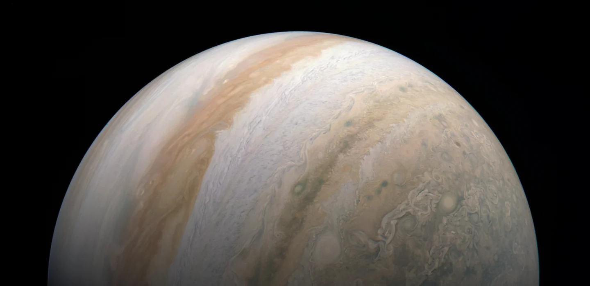
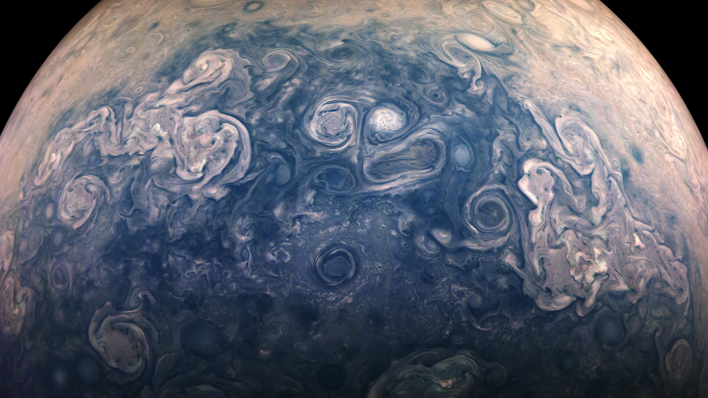
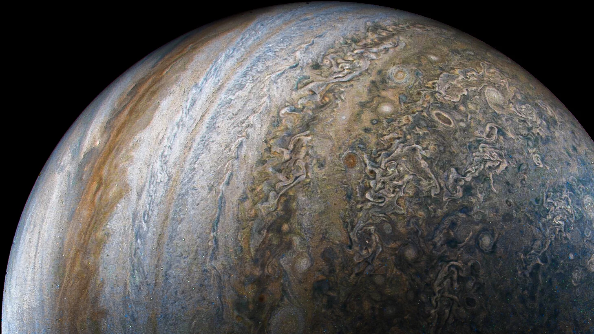
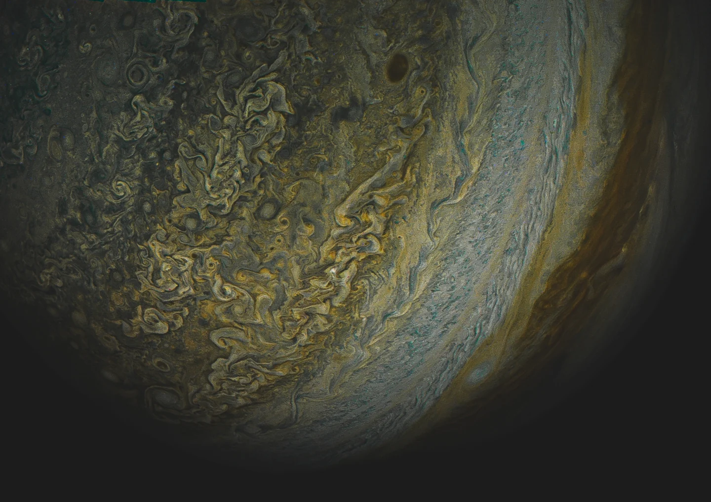

A camera flown for outreach sends home raw frames. The mission posts them and asks the public to make the pictures.
Images: NASA / JPL-Caltech / SwRI / MSSS, processed by JunoCam citizen scientists. This frame: Giulio Macrì.
Everything that follows is an argument about how to photograph this.
Frame processed by Rachel Richards.

They look painted on. They are not. Juno mapped the planet’s gravity field closely enough to trace the jet streams downward, and found the banded flow reaching some 3,000 kilometres below the cloud tops. Earth’s entire weather sits in a film a few kilometres thick.
There is nothing for it to sit on, either. Jupiter is hydrogen and helium nearly all the way down, and it turns once in under ten hours, faster than anything else in the solar system. That spin is what sorts the weather into stripes: pale zones where gas rises, dark belts where it sinks.
One crop crossing several belts and zones. Every colour boundary is a boundary in the flow. Processed by Kevin M. Gill.

Juno's polar orbit gave the first proper look over the top of the planet, and the stripes turned out to stop. In their place: one giant cyclone at the north pole, about 3,000 kilometres across, with eight more arranged around it. The south has its own smaller group.
They do not wander off or blow themselves out the way hurricanes do. They oscillate around fixed positions and drift slowly around the pole, holding the formation for years.
The Great Red Spot is the other constant, and it is shrinking: twice Earth's width in 1979, about 1.3 times now, with roots reaching some 320 kilometres below the cloud tops.
High latitudes, colour pushed hard. Each white curl is a cyclone hundreds of kilometres across; the deep blue is cloud far enough down that little light comes back. Processed by Gerald Eichstädt and Jackie Branc.

JunoCam is a pushframe imager. Its filter strips sit bonded directly onto the detector, 1600 pixels wide and about 155 rows high, and the spacecraft's own rotation drags them across the planet.
At the nominal two revolutions per minute, a frame lands roughly every 400 milliseconds. Nothing about the picture exists until someone assembles those strips.
Banded Hemisphere, a survey frame rather than a portrait. Dozens of vortices are packed into the shear zones where one belt meets the next. Processed by Raihan Mohammad.

Pixels leave the detector 12 bits deep and are companded to 8 bits inside the instrument. Everything posted on the mission site is that 8-bit form; radiometric work uses the linear 12-bit products archived with the Planetary Data System.
The camera is also being destroyed, and Jupiter is doing it. The planet's magnetosphere is the largest structure in the solar system and drives the harshest radiation belts around any planet, fed in part by material thrown off Io, and Juno flies straight through them on every pass.
Later perijoves come back with reduced dynamic range and a higher noise floor. The mission has handed that to citizen scientists as a problem to solve.
A dim frame worked up from very little signal. The grain is the noise floor rising along with everything else. Processed by ShanieMoorey.
Cropping counts. So does pulling one atmospheric feature out of the murk, pushing colour past what an eye would see, stitching frames into collages, and reconstructing colour from the separate filter strips.
The results have gone well past the gallery: illustrating articles, reported to the scientific community, cited in journal papers with attribution. Some of it the team simply treats as art.
Lower left: Raihan Mohammad. The other three: Jackie Branc.
One frame, one processor, one set of 8-bit pixels. The only thing that changed between these two pictures is how far the brightness was pushed before the file was saved.
Neither is wrong, and neither is a measurement. Science is done on the linear 12-bit products in the Planetary Data System. Every Jupiter picture the public has ever seen, including both of these, is somebody’s decision about what to make visible.
The gallery runs to hundreds of pages of public submissions. Six of them, below, cover most of the range: the Red Spot, a moon, a polar cyclone field, a belt, a single storm, and a whole disc. One instrument, six sets of hands, six different ideas of what the data is for.
The mission built an outreach camera, published the raw frames, and let the public decide what the planet looks like. Almost every Jupiter image you know came out of that arrangement.
It is the most-seen picture of another world, and it has no single author.
Images: NASA / JPL-Caltech / SwRI / MSSS, processed by JunoCam citizen scientists · missionjuno.swri.edu/junocam/processing. This frame: Raihan Mohammad.